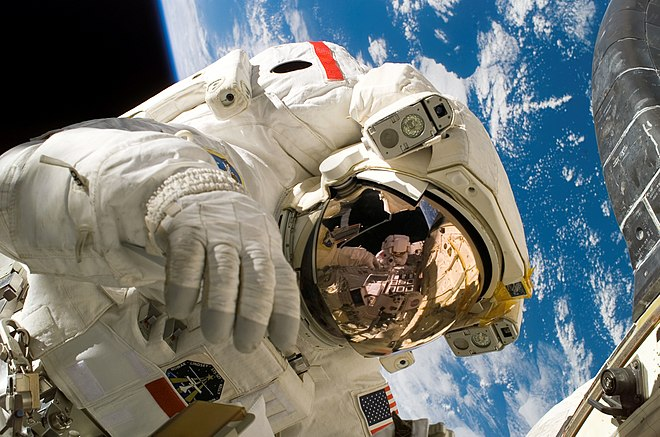

Section Espace
Recherches scientifiques à bord
Cette page contient: 11chapitres

Chapitre 1 : Introduction à la Recherche Scientifique
La Station spatiale internationale (ISS) est bien plus qu'un simple habitat en orbite. C'est un laboratoire scientifique unique où des recherches avancées sont menées dans des conditions de microgravité. Ces recherches ont des implications importantes pour la science, la technologie et la santé humaine, à la fois dans l'espace et sur Terre. Depuis le lancement de l'ISS, des centaines d'expériences ont été réalisées, couvrant un large éventail de disciplines scientifiques.
Chapitre 2 : Les Avancées en Biologie
La microgravité offre des opportunités uniques pour étudier les processus biologiques de manière différente que sur Terre. Les scientifiques ont étudié la croissance des cellules, les effets de l'apesanteur sur les systèmes biologiques et le comportement des micro-organismes. Ces recherches ont conduit à des découvertes importantes, comme l'amélioration de la compréhension du vieillissement cellulaire et le développement de nouvelles méthodes pour traiter les maladies.
Chapitre 3 : La Science des Matériaux
Les matériaux se comportent différemment en microgravité, offrant aux scientifiques des moyens nouveaux pour étudier leurs propriétés et les améliorer. Les recherches sur les alliages métalliques, les cristaux et les fluides ont permis de développer des matériaux plus résistants et plus légers. Ces avancées ont des applications potentielles dans divers domaines, allant de l'aérospatiale à l'électronique, en passant par la médecine.
Chapitre 4 : Les Études sur la Physiologie Humaine
Comprendre comment le corps humain réagit à la microgravité est crucial pour les futures missions spatiales de longue durée. Les astronautes à bord de l'ISS participent à des études qui examinent les effets de l'apesanteur sur les muscles, les os, le système cardiovasculaire et le système immunitaire. Ces recherches ont révélé des informations vitales pour contrer les effets négatifs de l'apesanteur et maintenir la santé des astronautes pendant les missions prolongées.
Chapitre 5 : Les Expériences en Physique Fondamentale
La microgravité permet d'explorer des aspects de la physique fondamentale qui sont difficiles, voire impossibles, à observer sur Terre. Les chercheurs ont étudié la physique des fluides, la combustion, et les phénomènes thermiques. Ces expériences aident à améliorer notre compréhension des lois physiques et peuvent conduire à des innovations technologiques et industrielles.
Chapitre 6 : La Médecine Spatiale
Les recherches médicales à bord de l'ISS visent à développer des traitements pour les conditions de santé qui affectent les astronautes et les personnes sur Terre. Des études sur les effets de l'apesanteur sur la distribution des médicaments, les changements hormonaux et les rythmes circadiens ont été menées. Les résultats de ces recherches peuvent améliorer les traitements médicaux pour une variété de maladies, y compris l'ostéoporose et les maladies cardiovasculaires.
Chapitre 7 : Les Expériences Agricoles
La culture de plantes en microgravité est essentielle pour les futures missions de longue durée, comme les voyages vers Mars. Les scientifiques ont étudié la croissance des plantes, la germination des graines, et les cycles de reproduction en apesanteur. Ces expériences fournissent des informations cruciales pour la production de nourriture dans l'espace et peuvent également améliorer les techniques agricoles sur Terre.
Chapitre 8 : Les Études de la Terre et de l'Espace
L'ISS offre une plateforme unique pour observer la Terre et l'espace. Les instruments à bord permettent de surveiller les changements climatiques, les catastrophes naturelles, et d'étudier l'atmosphère terrestre. De plus, l'ISS sert de base pour des observations astronomiques, aidant les scientifiques à étudier les phénomènes spatiaux tels que les rayons cosmiques et les tempêtes solaires.
Chapitre 9 : La Collaboration Internationale
La recherche à bord de l'ISS est le fruit d'une collaboration internationale, impliquant des scientifiques du monde entier. Cette coopération permet de partager les coûts et les bénéfices des recherches, et de rassembler les meilleures idées et technologies. Les expériences internationales contribuent à une compréhension globale et à des avancées scientifiques qui bénéficient à toute l'humanité.
Chapitre 10 : Les Innovations Technologiques
Les défis uniques de la vie et du travail à bord de l'ISS ont conduit à de nombreuses innovations technologiques. Les systèmes de support de vie, les technologies de recyclage de l'eau et de l'air, et les outils de maintenance en apesanteur sont quelques exemples. Ces innovations ont souvent des applications terrestres, améliorant la technologie et la qualité de vie sur Terre.
Chapitre 11 : Les Projets Futurs
La recherche scientifique à bord de l'ISS est en constante évolution, avec de nouveaux projets et expériences planifiés pour l'avenir. Des recherches sur les technologies de survie pour les missions vers Mars, les études sur l'impression 3D en microgravité, et les expériences de biologie synthétique sont en cours de développement. Ces projets promettent de repousser les limites de notre connaissance et de préparer l'humanité pour les futures explorations spatiales.
Conclusion : Un Laboratoire pour l'Humanité
La Station spatiale internationale représente un laboratoire extraordinaire où la science, la coopération internationale et l'innovation se rencontrent. Les recherches menées à bord de l'ISS ont déjà eu un impact profond sur notre compréhension de la science et de la technologie, et elles continueront de le faire. En regardant vers l'avenir, l'ISS reste un symbole puissant de ce que l'humanité peut accomplir lorsqu'elle travaille ensemble pour explorer l'inconnu.